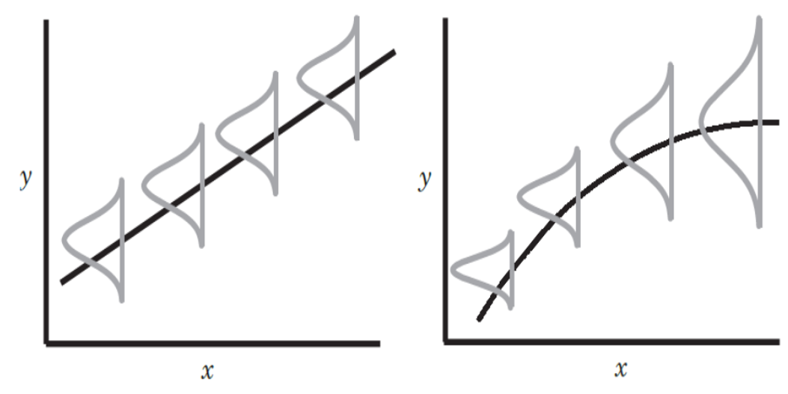

Later lectures will build on concepts such as correlation and regression; we therefore need to first recap requisite material from MATH42715, An Introduction to Statistics for Data Science.
Put simply, variables are measurable entities that can change or vary, for example a person’s height.
In the context of regression, the independent / predictor variable is the variable we think might be associated with the outcome. The dependent / response / outcome variable is the effect that depends on the value of the independent variable. Variable types are summarised in Figure 1.
Categorical variables
Categorical variables are made up of mutually exclusive, distinct categories e.g. shapes (circle, triangle etc). Categorical variables can be binary (two mutually exclusive categories e.g. ‘heads’ or ‘tails’ on a coin toss), nominal (more than two categories e.g. types of fruit), or ordinal (the variable has an ordered rank e.g. finishing position in a race).
Continuous variables
Continuous variables are scores that can take on any value along a given measurement scale. These can be intervals (so that equal intervals correspond to equal differences e.g. temperature in Celsius), ratios (have a meaningful zero thus having meaningful ratios e.g reaction times, money), or discrete (counts e.g. number of students in a class).
Before thinking of any analysis, you should always display your data graphically! A scatterplot is useful for checking to see if there is an association between a response and predictor variable. Association can be:
linear or non-linear,
positive or negative,
not present (no association)
We can use covariance as a measure of the (linear) relationship between two random variables. The metric evaluates how much – to what extent – the variables change together.
Given pairs of data points , we can compute sample covariance as where and are sample means. Note that:
positive covariance means a positive (linear) association,
negative covariance means a negative (linear) association,
a covariance of zero means no (linear) association.
Covariance is difficult to interpret. A strong or weak association depends on the scale of the data. We therefore typically work with correlation, which is used to measure strength of the linear association between two variables. We will typically work with Pearson correlation, which can be computed as To summarise, Pearson correlation is applicable to two continuous variables (assumed normally distributed). It can take values between and and exhibit
strong correlation (),
moderate correlation ( between and ),
Weak correlation ()
The simple linear regression model is Here,
is the outcome of the th person/unit that we want to predict,
is the th person/unit value on the predictor variable (also known as explanatory or independent variable)
is the slope; is the intercept. In practice, these are estimated by values and respectively. They are also known as regression coefficients.
The error term represents the discrepancy between the outcome and line for the th unit. It is also called a residual. Assumptions regarding the error term (and checking of these assumptions) is discussed later in these notes.
Estimates of the slope and intercept can be found using the method of least squares. We minimise the sum of squared differences between the line and the outcomes; that is, we minimise the Error Sum of Squares (SSE) given by This leads to Of course in practice we let R do the heavy lifting!
Hypothesis testing
We may wish to test to see if the slope parameter is needed in the model. That is, we test the null hypothesis against a general two-sided alternative (typically). The test statistic is where is the standard error of the estimator associated with . We then compute the p-value given by where is a student-t random variable on degrees of freedom. A bigger t-statistic will produce a small p-value. A small p-value (say less than 5%) suggests that either we have seen something rare or in fact the null hypothesis could be false. We interpret the p-value as evidence against the null, rejecting it if there is ‘sufficient evidence’ to do so. Insufficient evidence (e.g. ) means that we are unable to reject the null.
Given a line of best fit of the form , the interpretation is that a unit increase in leads to a change in of units.
Recall that from MATH42715 that where the Regression Sum of Squares (SSR) is measured by squaring the differences between the predicted value and the mean for each data point , and adding up. That is, Now, defining the coeficient of determination , we have that and represents the amount of variance in the outcome explained by the predictors (independent variables) in the regression model. Since , we have that with meaning that the regression is doing a good job of explaining the variation in the response.
Categorical variables
The values of a categorical variable indicate group membership of observations rather than a quantitative measurement. For example,
Binary – e.g. smoker; “Yes”, “No”
Ordered – e.g. obesity; “underweight”, “normal”, “overweight”, “obese”
Unordered – e.g. region; “Bristol”, “London” and “Stoke”
We can also create categorical variables from continuous variables by grouping values or using cut-offs.
A binary variable is a special type of categorical variable called an indicator variable taking the values of 0 and 1. Including indicator variables in a regression will model a difference in means between groups. For example, suppose . When (say group 1), the fitted value is and when (say group 2), the fitted value is , irrespective of the choice of . We have as the mean response value corresponding to group 1 and is the difference in mean response between the two groups.
When a categorical variable has more than two categories effects are estimated by introducing a series of dummy variables. First we choose a reference group (usually the lowest coded value of the variable) to which the other groups will be compared. If a variable has levels then indicators are included. The regression coefficient for each indicator variable is the difference in the mean outcome for that group compared to the reference group.
Assumptions and checking
There are four basic assumptions for every linear model with a continuous outcome:
Linearity: the relationship between the outcome variable and the predictor is linear. (Informally assess by looking at the plot of the residuals and the suspicious continuous predictor.)
Normally distributed errors: it is assumed that the residuals in the model are normally distributed. (Informally assess via a quantile-quantile plot (Q-Q plot) to compare the distribution of the residuals from the model with a standard Normal distribution. Or use a Shapiro-Wilk test.)
Independent errors: for any two observations, the residual terms should be independent. (Not easy to assess; one possibility is to check trend in the residuals.)
Homogeneity: the variation of the residuals at any level of the predictor is the same, that is, the variance of the residuals is constant irrespective of the value of the predictor variable. (Assess by plotting the residuals against predicted values. If the assumptions of constant variance is satisfied, the scatter plots should be random without any pattern. One may also look at the plot of the residuals and the actual outcome data. A formal test using Levene’s test can also be performed to test for constancy of variance.)

Fixing assumption violations
A Possible solution for the violation of Normality assumption and constant variance: transformation.
Either use of the logarithm or square root transformation of the outcome variable can help. However, it will mean loss of interpretation as the results would no longer be on the natural scale of the outcome variable. If, after transformation the assumptions were still not satisfied, the model should be reported and interpreted with clear statement on the assumptions violation.
The simple regression model describes a linear relationship between outcome and predictor.
Slope (Gradient): corresponds to the change in the Outcome (dependent) variable for a unit change in the predictor.
Positive slope of the regression line means a positive association.
Negative slope of the regression line means a negative association.
When slope is zero, it means there is no association between the outcome and the predictor variables.
A hypothesis test can be used to formally test for inclusion of the slope parameter.
The fitted regression equation can predict values of the outcome () for any value of predictor ().
The coefficient of determination can be used to judge the usefulness of the regression model (in explaining variation in the outcome variable).
The modelling assumptions should be carefully checked; if violated, an appropriate transformation may help.